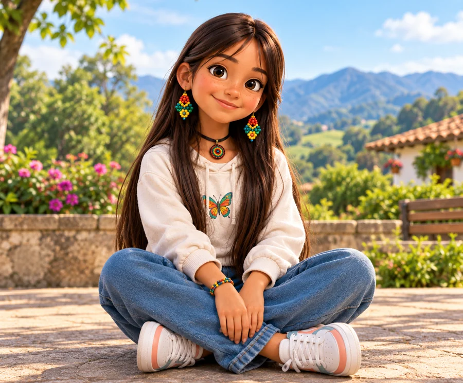

Guía 2.1 · Grupo 31 C6
Hipermedia lúdica con narrativas inspiradas en cosmovisiones de pueblos originarios para fortalecer el pensamiento ciudadano en 4.º y 5.º de primaria
Opción de Grado II
Docente: Lina María Preciado Restrepo
En la prueba Saber 5.º de 2023, el 84 % de los estudiantes del país se ubicó en el nivel 1 de Pensamiento Ciudadano; la proporción llegó al 88 % en el sector oficial y al 91 % en la zona rural (Icfes, 2024a). El árbol de problemas relaciona este desempeño con tres causas: pocas oportunidades en el aula para ejercitar el pensamiento ciudadano (pedagógica), una representación escasa y estereotipada de los pueblos originarios (epistémica y cultural) y el acceso limitado a internet y a computador (tecnológica). En términos tecnológicos: los estudiantes de 4.º y 5.º del Instituto de Promoción Social de Piedecuesta no cuentan con un recurso digital que les permita ejercitar esas competencias en situaciones cotidianas, que represente a los pueblos originarios desde sus propias cosmovisiones y que se ajuste a los dispositivos y la conectividad del aula.
¿Cómo desarrollar una hipermedia lúdica que, mediante narrativas inspiradas en cosmovisiones de pueblos originarios, contribuya al fortalecimiento del pensamiento ciudadano de los estudiantes de 4.º y 5.º de básica primaria del Instituto de Promoción Social de Piedecuesta (Santander)?
Desarrollar una hipermedia lúdica con narrativas inspiradas en cosmovisiones de pueblos originarios para contribuir al fortalecimiento del pensamiento ciudadano de los estudiantes de 4.º y 5.º de básica primaria del Instituto de Promoción Social de Piedecuesta (Santander).
Tecnología Educativa. Modalidad: proyecto tecnológico (recurso educativo digital en formato de aplicación web progresiva, PWA).
Proyecto tecnológico. La recolección combina técnicas cualitativas con un cuestionario de valoración, una rúbrica de análisis de justificaciones y una lista de chequeo de criterios de éxito, de uso descriptivo (McKenney y Reeves, 2019; Hoadley y Campos, 2022). El proyecto no mide el efecto de la hipermedia en el desempeño.
Investigación basada en diseño (DBR) en tres ciclos, uno por objetivo específico (McKenney y Reeves, 2019), con los cinco modos del Design Thinking (Hasso Plattner Institute of Design at Stanford, s. f.). Duración: Empatizar 2 semanas, Definir 2, Idear 2, Prototipar 8 y Evaluar 5 (19 en total). Al cierre del Ciclo 3 el prototipo alcanza el TRL 6 (Minciencias, s. f.). Criterios de calidad: relevancia, consistencia y factibilidad (Plomp y Nieveen, 2009, como se citó en Esteve Mon et al., 2019).

Sede A del Instituto de Promoción Social de Piedecuesta. Docentes de 4.º y 5.º (censal). Estudiantes: se sortean un grupo de 4.º y uno de 5.º, y dentro de cada uno 12 estudiantes cuyos datos se analizan (24 en total). Tres expertos externos para el juicio de expertos. De 4 a 6 estudiantes que no forman parte de la muestra para la prueba de usabilidad.
Cada instrumento usa lo que produjo el anterior. Toque un círculo para abrir la ficha.